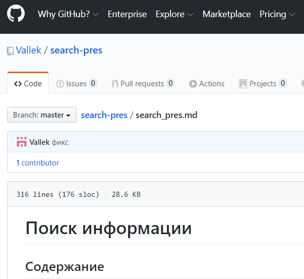

Конспект лекции
Презентация

В своей преподавательской практике я часто встречаю студентов, которые недооценивают важность самостоятельного поиска информации.
Эта лекция призвана объяснить новичкам, почему важно уметь искать информацию, где стоит и не стоит ее искать и как делать это эффективно. Это знания и подходы, которые я сам использую каждый день и без которых не смог бы добиться профессионального прогресса.
Она создавалась прежде всего для фронтендеров, но с небольшими изменениями применима к другим профессиям разработчиков. Я успешно читал ее для мобильных разработчиков, тестировщиков, бэкендеров.
Записаться на лекцию можно на отдельной странице